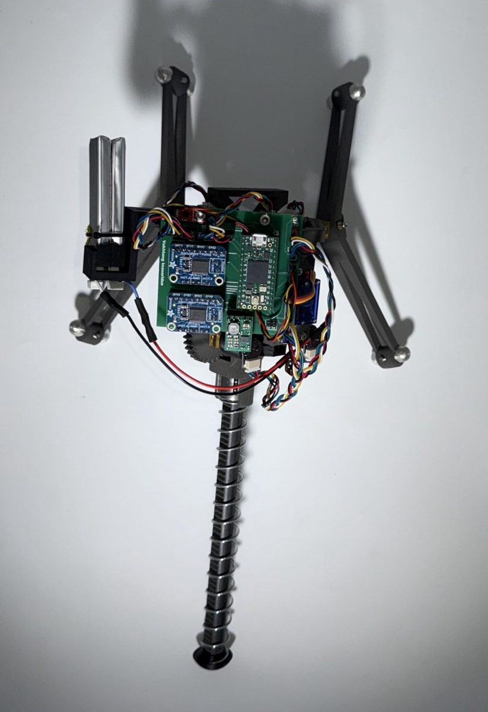

MRV: Monopedal Reconnaissance Vehicle
BEng dissertation, solo, 2025-26
A one-legged jumping robot for low-gravity exploration, stabilised by two inertial actuators. Self-proposed; I designed every mechanical part, the 4-layer PCB and the Teensy C++ firmware (120 Hz sensor fusion, independent 1 kHz safety interrupt).
- Five revisions of the spring release; an asymmetric ratchet wedge stored 38% more energy per cycle.
- Root-caused a 43% launch failure rate to a cam concentricity offset.
- mean jump at 360 g
- 41 cm
- elastic to potential energy
- 67.8%
- attitude recovery
- 12.7°
- of a £300 budget
- £286
